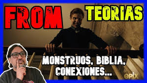
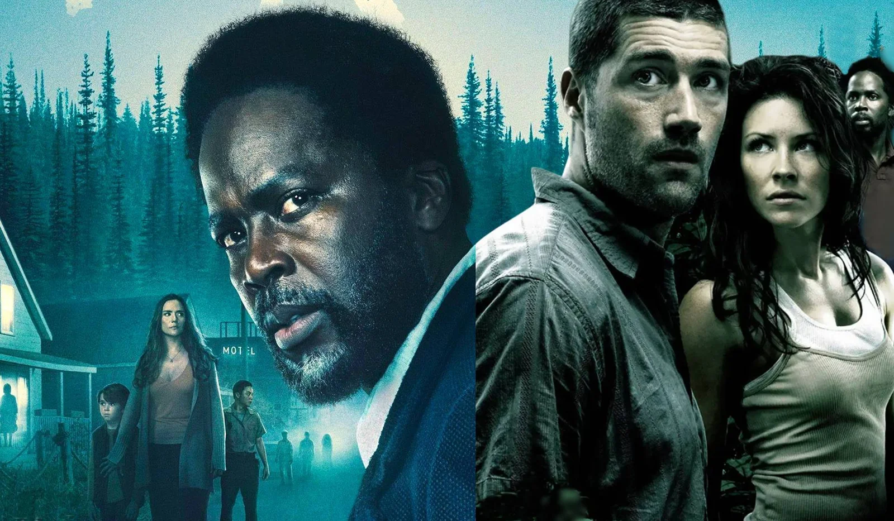

Las teorías
Resulta casi imposible no formular todo tipo de teorías al ver esta serie.
Sus múltiples incógnitas, sucesos sin mucho sentido, y esas delicadas pistas que siembran un pequeño sentimiento de certeza, hacen imposible no congeturar locas teorías.
En redes sociales se ha librado una batalla de hipótesis entre los miles de espectadores.
Es así que a lo largo de toda la serie, se han ido planteando posibles escenarios explicativos, pero al final nadie sabe con certeza la verdadera historia detrás de toda la trama.
Conexión con otras series icónicas
No podemos negar la conexión que tiene From, con series como Lost y Dark. Si pensamos en algunas situaciones nos encontramos con ciertas similitudes, una comunidad atrapada, posibles viajes entre dimensiones y tiempos, y mucho más que invoca un sentimiento de familiaridad.
Esto puede tener que ver en parte por la presencia del productor ejecutivo Jack Bender (Productor de Lost) y el actor Harold Perrineau (conocido por su actuación como Michael Dawson en Lost).
Conexión con Stephen King
Jack Bender ha expresando que la serie le debe mucho a la obra de
Stephen King, porque
está escribiendo sobre los monstruos que llevamos dentro, así como
sobre los monstruos que tenemos fuera
, lo cual conecta con From.
King fue más lejos con el cumplido, declarándose fan de la serie y animando a la gente a verla en redes sociales.
Comentarios y Críticas
Los internautas han dejado algunas críticas y comentarios en internet, compartiendo sus opiniones e impacto personal sobre la serie.
-
Eric B. dijo:
Me vi las temporadas 1 y 2 como un adicto. Serie que recuerda mucho a Lost pero con mayor ritmo. Si buscas sustos no encontrarás más que alguna pequeña muestra al principio aunque el sufrimiento y el miedo continuo de los personajes te envuelve durante toda la serie. Realmente recomendable.
-
Ainara Martínez López dijo:
Una serie que te engancha capitulo a capitulo una de las mejores series de intriga, emocion , incertidumbre... Y muy buenos actores y que engancha tanto que te puedes ver las 3 temporadas en 3 dias y aun quieres mas.
-
Marina Estrella Fernandez dijo:
Interesante, muchos giros inesperados no es de terror, me impacienta cual es el secreto de este pueblo.
-
Sara Uroz dijo:
10/10 Espectacular. Sensaciones increíbles de principio a fin. De verdad, menudo currazo! Estoy deseando la temporada 4 lo antes posible.
-
Roberto P. dijo:
Buena serie de suspenso, si te gusta "lost" "dark" de ese estilo esta te va a dar una grata sorpresa, dale la oportunidad no te decepcionara.
-
Maricel Zambrano Suárez dijo:
No me gusta mucho el género de terror, pero esta serie me encanta. Me gustó desde el primer capítulo. Esperando la cuarta temporada.